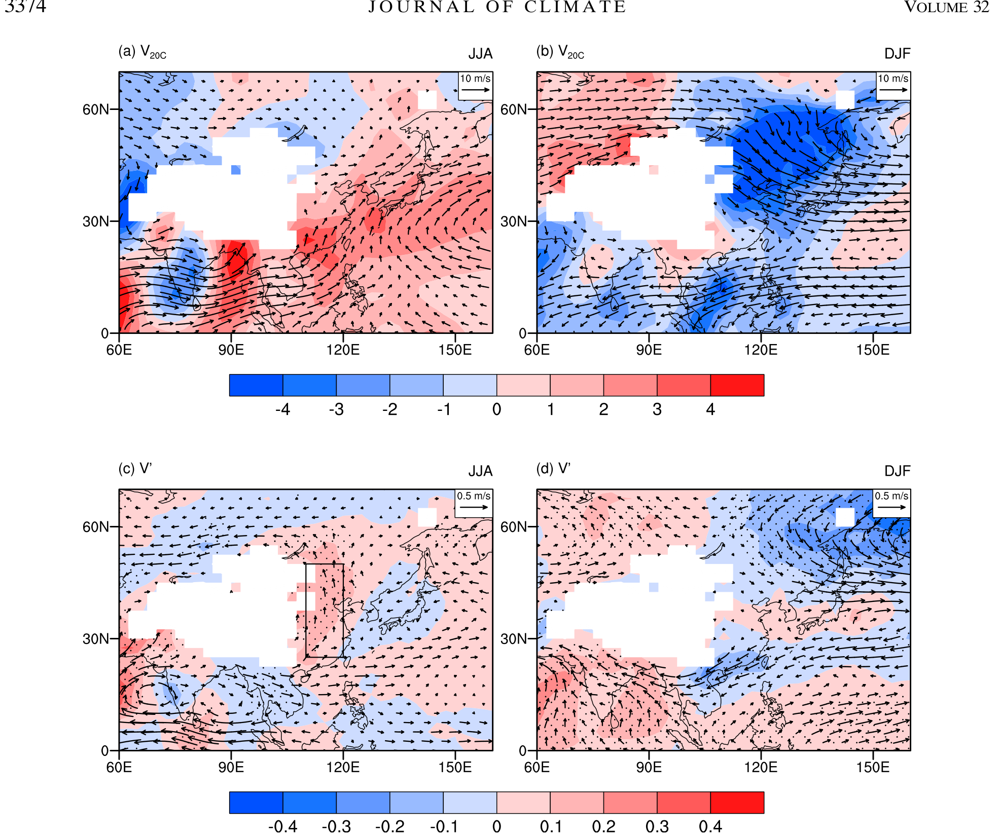
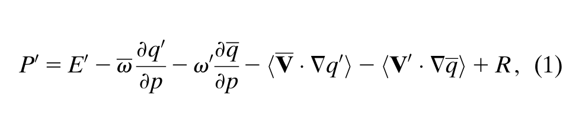
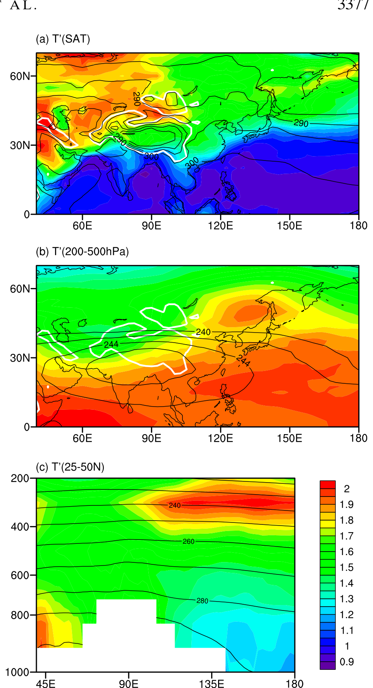
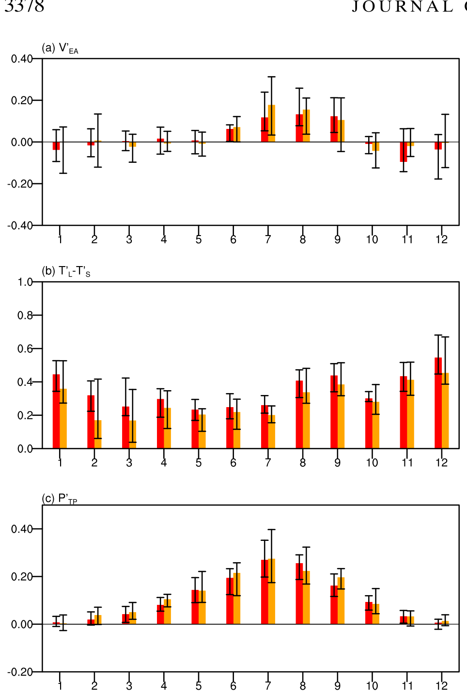
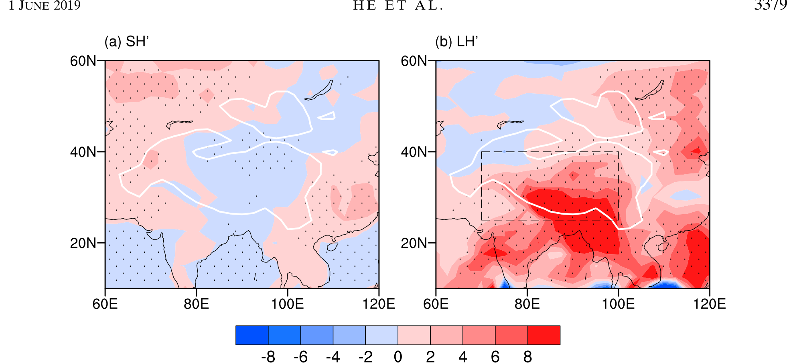
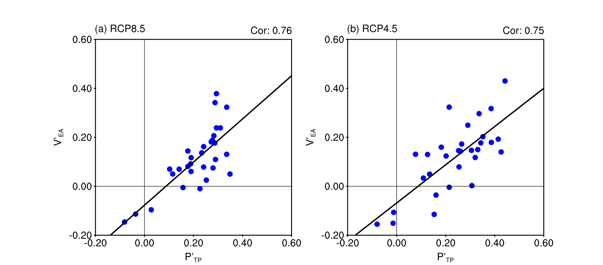
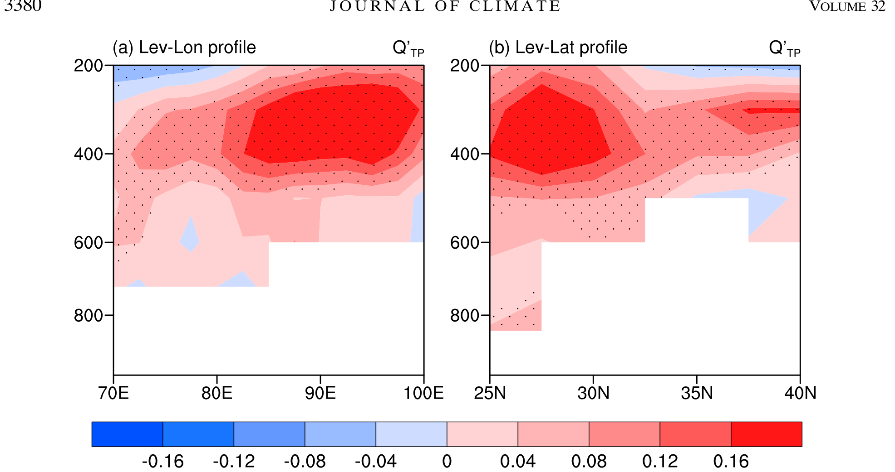
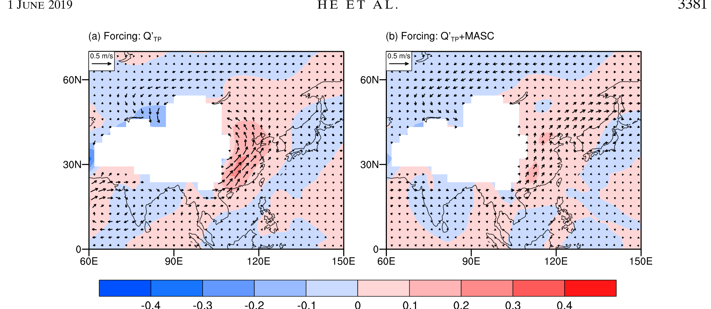
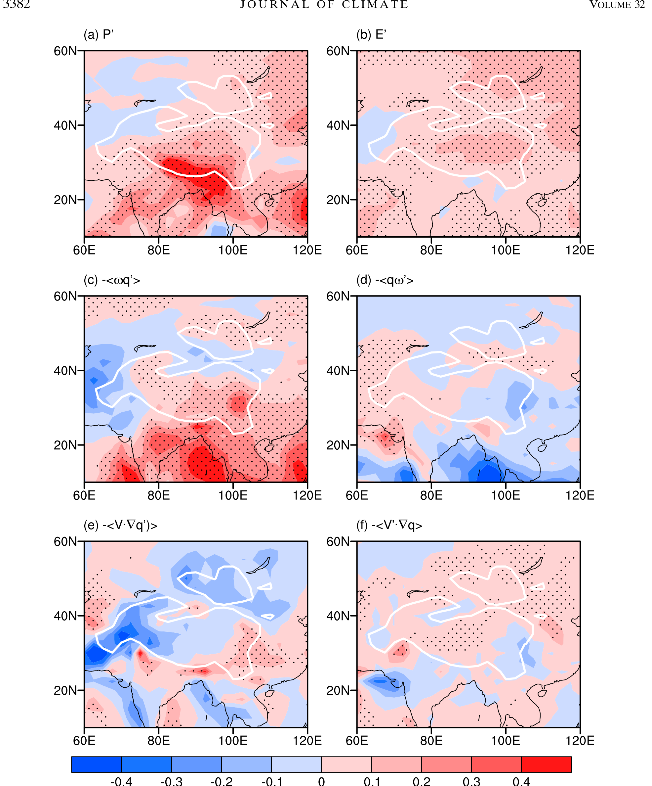
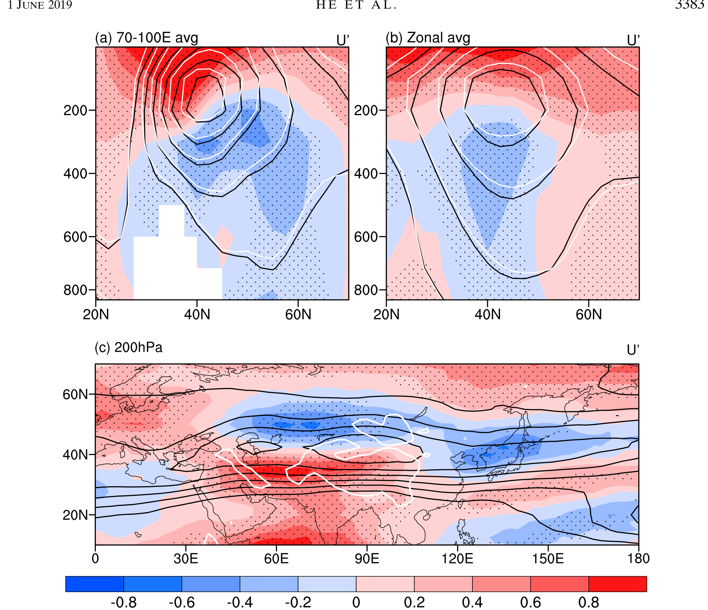

全球变暖背景下青藏高原潜热加热的增强——东亚夏季风环流增强的关键Enhanced Latent Heating over the Tibetan Plateau as a Key to the Enhanced East Asian Summer Monsoon Circulation under a Warming Climate
何超 — 暨南大学环境与气候研究院（广州），中国科学院大气物理研究所大气科学和地球流体力学数值模拟国家重点实验室（LASG，北京）
CHAO HE — Institute for Environmental and Climate Research, Jinan University, Guangzhou, and State Key Laboratory of Numerical Modeling for Atmospheric Sciences and Geophysical Fluid Dynamics (LASG), Institute of Atmospheric Physics, Chinese Academy of Sciences, Beijing, China
王子谦 — 中山大学大气科学学院、广东省气候变化与自然灾害研究重点实验室，南方海洋科学与工程广东省实验室（珠海）
ZIQIAN WANG — School of Atmospheric Sciences and Guangdong Province Key Laboratory for Climate Change and Natural Disaster Studies, Sun Yat-sen University, and Southern Marine Science and Engineering Guangdong Laboratory (Zhuhai), Zhuhai, China
周天军 — 中国科学院大气物理研究所大气科学和地球流体力学数值模拟国家重点实验室（LASG），中国科学院大学（北京）
TIANJUN ZHOU — State Key Laboratory of Numerical Modeling for Atmospheric Sciences and Geophysical Fluid Dynamics (LASG), Institute of Atmospheric Physics, Chinese Academy of Sciences, and University of Chinese Academy of Sciences, Beijing, China
李天明 — 南京信息工程大学气象灾害教育部重点实验室（南京）
TIM LI — Key Laboratory of Meteorological Disaster of Ministry of Education, Nanjing University of Information Science and Technology, Nanjing, China
（稿件收到日期：2018年7月1日；最终定稿：2019年2月21日）
(Manuscript received 1 July 2018, in final form 21 February 2019)
本文的补充信息可在期刊在线网站获取：https://doi.org/10.1175/JCLI-D-18-0427.s1。
Supplemental information related to this paper is available at the Journals Online website: https://doi.org/10.1175/JCLI-D-18-0427.s1.
通讯作者：何超博士，hechao@jnu.edu.cn
Corresponding author: Dr. Chao He, hechao@jnu.edu.cn
DOI: 10.1175/JCLI-D-18-0427.1
DOI: 10.1175/JCLI-D-18-0427.1
© 2019 美国气象学会（AMS）。有关本内容再利用及一般版权信息，请查阅 AMS 版权政策（www.ametsoc.org/PUBSReuseLicenses）。
© 2019 American Meteorological Society. For information regarding reuse of this content and general copyright information, consult the AMS Copyright Policy (www.ametsoc.org/PUBSReuseLicenses).
摘要Abstract
耦合气候系统模式一致显示，与东亚夏季风（EASM）相联系的低层偏南风在人为温室气体强迫下增强，以往研究将增强的东亚夏季风归因于增强的海陆热力对比。
Coupled climate system models consistently show that the low-level southerly wind associated with the East Asian summer monsoon (EASM) is enhanced under anthropogenic greenhouse gas forcing, and the enhanced EASM was attributed to the enhanced land–sea thermal contrast by previous studies.
基于对耦合模式比较计划第五阶段（CMIP5）30个耦合模式集合中全球变暖情景与现代气候的对比，我们给出证据表明：就季节特征而言，海陆热力对比的变化无法解释增强的东亚夏季风环流。
Based on a comparison of the global warming scenarios with the present-day climate in an ensemble of 30 coupled models from phase 5 of the Coupled Model Intercomparison Project (CMIP5), we show evidence that changes in land–sea thermal contrast cannot explain the enhanced EASM circulation in terms of the seasonality.
事实上，东亚上空增强的低层偏南风与青藏高原（TP）周围的大尺度异常气旋相联系，线性斜压模式的数值模拟表明，与降水增强相联系的青藏高原潜热加热增强，正是耦合模式所预估的这一低层气旋异常与增强的东亚夏季风环流的成因。
Indeed, the enhanced low-level southerly wind over East Asia is associated with a large-scale anomalous cyclone around the Tibetan Plateau (TP), and numerical simulation by the Linear Baroclinic Model suggests that the enhanced latent heating over the TP associated with enhanced precipitation is responsible for this low-level cyclone anomaly and the enhanced EASM circulation projected by the coupled models.
水汽收支分析显示，增强的水文再循环以及因比湿增大而增强的垂直水汽平流，对青藏高原降水的增加贡献最大，并且东亚夏季风环流预估变化的模式间不确定性有一半以上与青藏高原降水变化的不确定性有关。
Moisture budget analysis shows that enhanced hydrological recycling and enhanced vertical moisture advection due to increased specific humidity have the largest contribution to the increased precipitation over the TP, and more than half of the intermodel uncertainty in the projected change of EASM circulation is associated with the uncertainty in the changes of precipitation over the TP.
因此，在全球变暖背景下，青藏高原通过其上增强的潜热加热，在增强东亚夏季风环流方面发挥着至关重要的作用。
Therefore, the TP plays an essential role in enhancing the EASM circulation under global warming through enhanced latent heating over the TP.
1. 引言1. Introduction
东亚以季风气候为特征，其低层盛行风发生季节性反转：夏季为偏南风，冬季为偏北风（图1a、b）。
East Asia features by a monsoon climate, with a seasonal reversal of low-level prevailing wind from southerly wind in summer to northerly wind in winter (Figs. 1a,b).
夏季，充沛的水汽由季风偏南风在低层对流层从热带海洋输送至东亚（图1a），这决定了东亚的主要雨季（Zhou and Yu 2005; Sun et al. 2011; Li et al. 2014）。
In summer, abundant water vapor is transported from tropical ocean to East Asia by the monsoon southerly wind in the lower troposphere (Fig. 1a), which is responsible for the major rainy season over East Asia (Zhou and Yu 2005; Sun et al. 2011; Li et al. 2014).

图 1. 20C 模拟中的气候态以及 CMIP5 模式 MMM 的预估变化。
FIG. 1. The climatology in the 20C simulation and the projected change by the MMM of the CMIP5 models.
(a)、(b) 20C 模拟中 850 hPa 的风矢量与经向风（填色；单位：m s⁻¹）。
(a),(b) The wind vector and meridional wind (shading; m s⁻¹) at 850 hPa in the 20C simulation.
(c)、(d) RCP8.5 情景下每 1 K 热带平均地表增暖对应的 850 hPa 风矢量与经向风（填色；单位：m s⁻¹）的 MMM 预估变化。
(c),(d) The MMM-projected change in the wind vector and meridional wind (shading; m s⁻¹) at 850 hPa per 1 K of tropical mean surface warming under RCP8.5.
经向风预估变化得到 70% 以上模式一致支持的区域以打点标示。
Areas where the projected changes in the meridional wind agreed by more than 70% of the models are stippled.
结果分别对应 (a)、(c) 夏季和 (b)、(d) 冬季。
Results are shown for (a),(c) summer and (b),(d) winter.
东亚的夏季风具有显著的变率，它对东亚的农业生产至关重要，并可引发严重的气象灾害（Ding 2007; Zhou et al. 2009a; Li et al. 2016）。
The summer monsoon in East Asia is subject to substantial variability, and it is crucial for agriculture production in East Asia and can induce severe meteorological disasters (Ding 2007; Zhou et al. 2009a; Li et al. 2016).
东亚夏季风（EASM）的强度通常用低层偏南风或与之相联系的海平面气压纬向梯度来度量（如 Guo 1983; Wang et al. 2001; Wang et al. 2008a）。
The strength of the East Asian summer monsoon (EASM) is usually measured by the low-level southerly wind or the associated zonal gradient of sea level pressure (e.g., Guo 1983; Wang et al. 2001; Wang et al. 2008a).
当东亚上空的低层偏南风强于（弱于）正常时，东亚的主要雨带随之北移（南移）。
When the low-level southerly wind over East Asia is stronger (weaker) than normal, the major rain belt over East Asia is shifted northward (southward).
因此，较强的东亚夏季风环流对应东亚北部降水偏多、长江流域（东亚南部）降水偏少（Wang et al. 2008a; Yang et al. 2015）。
Therefore, a stronger EASM circulation is responsible for excessive rainfall over the northern part of East Asia and deficient rainfall along the Yangtze River in the southern part of East Asia (Wang et al. 2008a; Yang et al. 2015).
鉴于季风对东亚的巨大社会影响，东亚夏季风对气候变化的响应引起了季风研究界的广泛关注。
Given the great societal impact of monsoons on East Asia, the response of the EASM to climate change has attracted wide interest from the monsoon community.
尽管观测记录显示东亚夏季风在20世纪70年代末之后出现了年代际减弱（如 Yu et al. 2004; Yu and Zhou 2007; Ding 2007; Zhou et al. 2009b），但越来越多的证据表明，这一年代际变化主要由气候系统内部变率（如太平洋年代际振荡）或气溶胶强迫所主导（Li et al. 2010; Lei et al. 2014; Song et al. 2014; Yu et al. 2016; Zhu et al. 2016; Yang et al. 2017），并且东亚夏季风的强度近期已有所恢复（Zhu et al. 2011; Liu et al. 2012; Xu et al. 2013, 2015）。
Although a decadal weakening of EASM after the late 1970s was reported based on the observational record (e.g., Yu et al. 2004; Yu and Zhou 2007; Ding 2007; Zhou et al. 2009b), growing evidence suggests that this decadal change was dominated by the internal variability of the climate system (such as the Pacific decadal oscillation) or aerosol forcing (Li et al. 2010; Lei et al. 2014; Song et al. 2014; Yu et al. 2016; Zhu et al. 2016; Yang et al. 2017), and the strength of EASM has recovered recently (Zhu et al. 2011; Liu et al. 2012; Xu et al. 2013, 2015).
古气候记录表明，在温暖时期东亚夏季风环流更强、东亚雨带向西北移动（Man et al. 2012; Yang et al. 2015）。
Paleoclimate records suggest a stronger EASM circulation and a northwestward shift of East Asian rain belt during warmer epochs (Man et al. 2012; Yang et al. 2015).
耦合气候模式是理解东亚夏季风对当前全球变暖响应的有用工具。
Coupled climate models are a useful tool to understand the response of the EASM to the ongoing global warming.
在温室气体（GHG）浓度增加的强迫下，东亚上空增强的夏季风偏南风是 CMIP3 至 CMIP5 耦合气候系统模式（Sun and Ding 2010; Chen et al. 2012; Ding et al. 2013; Jiang and Tian 2013; Kamae et al. 2014; Kitoh 2017）以及其他单个模式（Bueh and Lin 2003; Ham et al. 2016）共同预估的稳健特征。
Forced by the increased greenhouse gas (GHG) concentration, the enhanced summer monsoon southerly wind over East Asia is a robust feature projected by the coupled climate system models from CMIP3 to CMIP5 (Sun and Ding 2010; Chen et al. 2012; Ding et al. 2013; Jiang and Tian 2013; Kamae et al. 2014; Kitoh 2017) and by other individual models (Bueh and Lin 2003; Ham et al. 2016).
耦合模式模拟的东亚夏季风环流对全球变暖的响应增强得到古气候证据的支持，这同时也表明近几十年观测到的年代际变化由内部变率而非全球变暖主导（Zhou et al. 2009a; Li et al. 2010; Deser et al. 2012; Xu et al. 2013; Song and Zhou 2015）。
The enhancement of EASM circulation in response to global warming simulated by the coupled models is supported by paleoclimate evidence, and it also suggests that the observed decadal change in recent decades is dominated by the internal variability rather than global warming (Zhou et al. 2009a; Li et al. 2010; Deser et al. 2012; Xu et al. 2013; Song and Zhou 2015).
理解东亚夏季风对全球变暖的响应机制，需要了解东亚夏季风的形成机制。
Understanding the mechanism for the response of the EASM to global warming requires knowledge about the formation mechanism of the EASM.
纬向海陆热力对比被认为是东亚夏季风低层偏南风的主要驱动因子（Zhou et al. 2009b; Zhou and Zou 2010; Li et al. 2016; Kitoh 2017）。
Zonal land–sea thermal contrast is regarded as the primary driver for the low-level southerly wind of the EASM (Zhou et al. 2009b; Zhou and Zou 2010; Li et al. 2016; Kitoh 2017).
由于海洋的热惯性远大于陆地，夏季东亚陆地较西北太平洋偏暖，从而驱动纬向气压梯度和东亚上空的低层偏南风。
As the thermal inertia of ocean is much greater than that of land, a warmer East Asian land area than western North Pacific in summer drives a zonal pressure gradient and a low-level southerly wind over East Asia.
海陆热力对比不仅在地面显著，在对流层中上层同样显著，对流层上层在青藏高原上空存在一个暖中心（Li and Yanai 1996; Dai et al. 2013; Wu et al. 2015）。
The land–sea thermal contrast is evident not only at the surface but also in the middle to upper troposphere, with an upper tropospheric warm center over the Tibetan Plateau (Li and Yanai 1996; Dai et al. 2013; Wu et al. 2015).
对流层上层的海陆热力对比能很好地解释东亚夏季风和南亚夏季风在年际、年代际和千年时间尺度上的变率（Ueda et al. 2006; Man et al. 2012; Dai et al. 2013; Kamae et al. 2017; Endo et al. 2018）。
The upper-tropospheric land–sea thermal contrast well explains the variability of EASM and South Asian summer monsoon at interannual, decadal, and millennial time scales (Ueda et al. 2006; Man et al. 2012; Dai et al. 2013; Kamae et al. 2017; Endo et al. 2018).
除海陆热力对比之外，青藏高原（TP）还通过其动力和热力效应在东亚夏季风的形成中发挥关键作用。
Besides the land–sea thermal contrast, the Tibetan Plateau (TP) also plays a key role in the formation of EASM via its dynamic and thermodynamic effects.
西风急流相对于青藏高原的位置对东亚雨带的季节进程至关重要。
The relative location of the westerly jet to TP is essential to the seasonal march of the East Asian rain belt.
当西风急流从青藏高原上移至高原北坡时，梅雨（日语称 baiu，韩语称 changma）开始；当西风急流位于青藏高原以北较远位置时，中国北方的雨季开始（Molnar et al. 2010; Chiang et al. 2015; Chiang et al. 2017）。
The mei-yu (called baiu in Japanese and changma in Korean) onset occurs when the westerly jet marches from the TP to the northern slope of the TP, and the rainy season over northern China starts when the westerly jet is located well to the north of the TP (Molnar et al. 2010; Chiang et al. 2015; Chiang et al. 2017).
对流层上层西风急流的北移与东亚上空增强的低层偏南风以及中国北部降水偏多（偏少）、南部降水偏少（偏多）相联系（Liang and Wang 1998; Li et al. 2010; Xuan et al. 2011; Chiang et al. 2017）。
The northward shift of the westerly jet in the upper troposphere is associated with enhanced low-level southerly wind over East Asia and excessive (deficient) precipitation over northern (southern) China (Liang and Wang 1998; Li et al. 2010; Xuan et al. 2011; Chiang et al. 2017).
除上述动力效应外，青藏高原上空的抬升加热吸引低层质量向高原辐合，从而在高原周围激发出低层气旋性风场（Ding and Chan 2005; Wu et al. 2007; Wu and Liu 2016; Wang et al. 2019）。
Besides the above dynamic effect, elevated heating over the TP attracts a low-level mass convergence toward the TP, which induces a low-level cyclonic wind around the TP (Ding and Chan 2005; Wu et al. 2007; Wu and Liu 2016; Wang et al. 2019).
青藏高原近地面的感热加热以及与凝结相联系的潜热加热都能有效增强亚洲季风（Wu et al. 2007, 2016; Wang et al. 2008b; Xu et al. 2013; Hu and Duan 2015; Wu and Liu 2016）。
Sensible heating near the surface and latent heating associated with condensation over the TP are both effective in strengthening the Asian monsoon (Wu et al. 2007, 2016; Wang et al. 2008b; Xu et al. 2013; Hu and Duan 2015; Wu and Liu 2016).
以往研究几乎都将全球变暖下增强的东亚夏季风环流归因于地面或自由对流层中增强的海陆温差（如 Bueh and Lin 2003; Ding et al. 2013; Jiang and Tian 2013; Kamae et al. 2014; Endo et al. 2018）。
Almost all of the previous studies attributed the enhanced EASM circulation under global warming to the enhanced land–sea temperature contrast at the surface or in the free troposphere (e.g., Bueh and Lin 2003; Ding et al. 2013; Jiang and Tian 2013; Kamae et al. 2014; Endo et al. 2018).
全年陆地地表增暖幅度强于海洋是全球性现象（Byrne and O’Gorman 2013; Kamae et al. 2014），但全球变暖下全球季风环流的整体减弱却无法用全球海陆热力对比的整体增强来解释（Kitoh et al. 2013; Kitoh 2017; Biasutti et al. 2018）。
It is a global phenomenon that the amplitude of land surface warming is stronger than the ocean throughout the year (Byrne and O’Gorman 2013; Kamae et al. 2014), but the overall weakening of global monsoon circulation under global warming cannot be explained by the overall increase of global land–sea thermal contrast (Kitoh et al. 2013; Kitoh 2017; Biasutti et al. 2018).
如图 1c 及 Jiang and Tian (2013) 所示，东亚上空增强的低层偏南风与青藏高原周围的气旋异常相联系。
As shown in Fig. 1c and in Jiang and Tian (2013), the enhanced low-level southerly wind over East Asia is associated with a cyclone anomaly around the TP.
然而，迄今为止，青藏高原在东亚夏季风环流对全球变暖响应中的作用尚不清楚。
However, the role of the TP on the response of EASM circulation to global warming was not clear up to now.
因此，本研究旨在回答以下问题：全球变暖下增强的东亚夏季风环流是由海陆热力对比驱动，还是由青藏高原的热力强迫驱动？
Therefore, this study aims at answering the following questions: Is the enhanced EASM circulation under global warming driven by the land–sea thermal contrast or the thermal forcing from the TP?
青藏高原如何调制东亚夏季风环流对全球变暖的响应？
How does the TP modulate the response of EASM circulation to global warming?
本文其余部分安排如下。
The remainder of this paper is organized as follows.
第 2 节介绍模式与分析方法。
The model and analysis methods are introduced in section 2.
第 3 节考察东亚季风在与海陆热力对比相联系下的预估变化，第 4 节研究青藏高原可能发挥的作用。
The projected change in East Asian monsoon in association with the land–sea thermal contrast is examined in section 3, and the possible role played by the TP is investigated in section 4.
最后，第 5 节对结论进行总结。
Finally, the conclusions are summarized in section 5.
2. 模式、数据与方法2. Model, data, and methods
a. CMIP5 模式a. CMIP5 models
为提取温室气体强迫的响应，本研究采用 CMIP5 中 30 个可用的模式进行分析（各模式名称与所属机构列于在线补充材料中的表 S1），并分析历史试验与代表性浓度路径（RCP）8.5 和 RCP4.5 试验。
To extract the GHG-forced response, 30 available models from CMIP5 are adopted for analysis in this study (the names and institutions for the models are listed in Table S1 in the online supplemental information), and the historical and representative concentration pathway (RCP) 8.5 and RCP4.5 experiments are analyzed.
历史试验在观测到的历史外强迫（如温室气体和气溶胶）下进行（Taylor et al. 2012），历史试验中 1950–99 年时段被用来代表基准气候，记为 20C。
The historical experiment is performed under observed historical external forcing (e.g., GHG and aerosols) (Taylor et al. 2012), and the 1950–99 period in the historical experiment is used to represent the baseline climate, referred to as 20C.
RCP8.5 和 RCP4.5 试验由未来全球变暖情景强迫，其 2100 年的辐射强迫分别为 8.5 和 4.5 W m⁻²（van Vuuren et al. 2011）。
The RCP8.5 and RCP4.5 experiments are forced by future global warming scenarios with a radiative forcing of 8.5 and 4.5 W m⁻² in the year of 2100 (van Vuuren et al. 2011).
RCP8.5 和 RCP4.5 试验中的 2050–99 年时段（记为 21C）被采用，并与历史试验中的 20C 进行比较。
The 2050–99 periods in the RCP8.5 and RCP4.5 experiments (referred to as 21C) are adopted and compared with 20C in the historical experiment.
本研究未采用 IPCC 建议的 20 年平均，而是沿用许多先前研究的做法采用 50 年平均（Xie et al. 2010; Long and Xie 2015; He et al. 2017），以更有效地抑制气候系统的内部变率，从而得到强迫响应。
Instead of the 20-yr average recommended by the IPCC, the 50-yr average is adopted, following many previous studies (Xie et al. 2010; Long and Xie 2015; He et al. 2017), to obtain the forced response by more efficiently suppressing internal variability of the climate system.
每个模式仅使用一个集合成员，以使各模式等权重。
Only one realization for each model is used to equally weight the models.
变量 X 对全球变暖的响应，定义为 21C 与 20C 之差按热带平均地表增暖幅度归一化后的多模式中位数（MMM），记为 X′。
The response of a variable X to global warming is evaluated as the multimodel median (MMM) of the difference between 21C and 20C scaled by the amplitude of tropical mean surface warming, denoted as X′.
21C 相对于 20C 的热带平均地表增暖的 MMM 在 RCP8.5 下为 2.83 K，在 RCP4.5 下为 1.72 K。
The MMM of the tropical mean surface warming in 21C relative to 20C is 2.83 K for RCP8.5 and 1.72 K for RCP4.5.
采用 MMM 而非多模式平均是为了抑制异常模式的影响（Gleckler et al. 2008）；当超过 70% 的单个模式对变化符号的预估一致时，认为 MMM 预估的变化显著，按学生 t 检验这大约相当于 95% 的置信水平（Power et al. 2012）。
The MMM is adopted instead of the multimodel mean to suppress the impact from outlier models (Gleckler et al. 2008), and the MMM-projected change is considered as significant if the sign of change is agreed upon by more than 70% of the individual models, approximately equivalent to 95% confidence level according to the Student’s t test (Power et al. 2012).
为简洁起见，本文全文采用 RCP8.5 情景，同时采用 RCP4.5 情景检验结果对情景的依赖性。
For brevity, the RCP8.5 scenario is adopted throughout this study, whereas the RCP4.5 scenario is adopted to examine the dependence of the results on the scenario.
b. 水汽收支分析b. Moisture budget analysis
采用水汽收支分析来理解青藏高原降水的变化。
Moisture budget analysis is adopted to understand the change in precipitation over the TP.
参照 Chou et al. (2009)，水汽收支方程写为
Following Chou et al. (2009), the moisture budget equation is written as
P′ = E′ − ⟨v ∂q′/∂p⟩ − ⟨v′ ∂q/∂p⟩ − ⟨V·∇q′⟩ − ⟨V′·∇q⟩ + R, (1)
P′ = E′ − ⟨v ∂q′/∂p⟩ − ⟨v′ ∂q/∂p⟩ − ⟨V·∇q′⟩ − ⟨V′·∇q⟩ + R, (1)

其中 P、E、v、q、p、V 和 R 分别代表降水、蒸发、垂直速度、比湿、气压、水平风矢量和残差。
where P, E, v, q, p, V, and R stand for precipitation, evaporation, vertical velocity, specific humidity, pressure, the horizontal wind vector, and the residual, respectively.
符号 ⟨⟩ 表示从地面到 200 hPa 的垂直积分。
The symbol ⟨⟩ indicates the vertical integration from surface to 200 hPa.
带上划线的变量表示 20C 的平均态，带撇号的变量表示按热带平均地表增暖归一化的 21C 与 20C 之差。
The variable with an overbar indicates the mean state in 20C, and the variable with a prime indicates the difference between 21C and 20C scaled by tropical mean surface warming.
根据方程 (1)，降水变化由蒸发变化 E′、垂直水汽平流的热力学与动力变化（−⟨v∂q′/∂p⟩ 和 −⟨v′∂q/∂p⟩）、水平水汽平流的热力学与动力变化（−⟨V·∇q′⟩ 和 −⟨V′·∇q⟩）以及残差 R 组成。
According to Eq. (1), the change of precipitation is composed of evaporation change E′, thermodynamic and dynamic changes of vertical moisture advection (−⟨v∂q′/∂p⟩ and −⟨v′∂q/∂p⟩), thermodynamic and dynamic changes of horizontal moisture advection (−⟨V·∇q′⟩ and −⟨V′·∇q⟩), and the residual R.
水汽收支分析已被证实对青藏高原及其南北坡均适用（Peng and Zhou 2017; Wang et al. 2017, 2018）。
The moisture budget analysis is confirmed to be valid over the TP and on its northern and southern slopes (Peng and Zhou 2017; Wang et al. 2017, 2018).
c. 线性斜压模式c. Linear Baroclinic Model
本研究采用线性斜压模式（LBM）研究异常大气环流对异常非绝热加热的响应。
The Linear Baroclinic Model (LBM) is adopted in this study to investigate the response of anomalous atmospheric circulation to anomalous diabatic heating.
LBM 是由 Watanabe and Kimoto (2000) 发展的原始方程模式，已被广泛用于研究大气环流对青藏高原异常热源的响应（Wang et al. 2008b; Harada et al. 2014; Qu and Huang 2016; Cao et al. 2017）。
The LBM is a primary equation model developed by Watanabe and Kimoto (2000), and it was widely used to investigate the response of atmospheric circulation to anomalous heat source over the TP (Wang et al. 2008b; Harada et al. 2014; Qu and Huang 2016; Cao et al. 2017).
本研究中，LBM 以 T42 三角截断分辨率运行，垂直方向有 20 个 sigma 层。
In this study, the LBM is run at a resolution of triangular truncation of T42, with 20 sigma levels in the vertical.
模式由定常非绝热热源强迫并积分 50 天，取最后 20 天的平均作为平衡响应。
The model is forced by steady diabatic heat source and integrated for 50 days, and the average for the last 20 days is taken as the equilibrium response.
3. 东亚季风环流与海陆热力对比的预估变化3. Projected changes in the East Asian monsoon circulation and land–sea thermal contrast
在人为温室气体浓度增加所强迫的变暖气候下，东亚与西太平洋上空低层大气环流响应最显著的特征，是与东亚夏季风环流相联系的偏南风增强。
Under a warming climate forced by increased concentration of anthropogenic GHG, the most prominent feature of the response of the low-level atmospheric circulation over East Asia and the west Pacific is the enhanced southerly wind associated with EASM circulation.
如 850 hPa 风的 MMM 预估变化所示，从中国东部到蒙古一带低层偏南风的增强得到超过 70% 的单个模式的一致支持（图 1c）。
As shown in the MMM-projected change in wind at 850 hPa, the enhancement of the low-level southerly wind from the eastern part of China to Mongolia is agreed upon by more than 70% of the individual models (Fig. 1c).
RCP4.5 情景下也得到类似的变化（图略），且许多先前研究已有报道（如 Sun and Ding 2010; Chen et al. 2012; Jiang and Tian 2013）。
Similar change is also obtained under RCP4.5 (figure not shown) and reported by many previous studies (e.g., Sun and Ding 2010; Chen et al. 2012; Jiang and Tian 2013).
这一现象不能用西北太平洋副热带高压（WNPSH）的变化来解释，因为模式预估的副热带西太平洋大气环流变化较弱且模式间不一致（图 1c）。
This phenomenon cannot be explained by the change in the western North Pacific subtropical high (WNPSH), as the projected change of atmospheric circulation over subtropical western Pacific is weak and uncertain among the models (Fig. 1c).
事实上，在更暖的气候下，对流层低层的 WNPSH 总体上保持不变（He and Zhou 2015）或略有减弱（Huang et al. 2016），这无法解释东亚陆地上空增强的偏南风。
In fact, the WNPSH at the lower troposphere remains generally unchanged (He and Zhou 2015) or slightly weakened (Huang et al. 2016) under a warmer climate, which cannot explain the enhanced southerly wind over East Asian land region.
预估的偏南风异常在冬季并不存在（图 1d）。
The projected southerly wind anomaly is absent in winter (Fig. 1d).
由于已有研究认为对流层低层东亚经向风的强度与纬向海陆热力对比相联系（Wang et al. 2008a; Dai et al. 2013），图 2a 和图 2b 给出了地面气温和对流层上层（200–500 hPa 垂直平均）温度的预估变化。
As the strength of the East Asian meridional wind in the lower troposphere was claimed to be associated with the zonal land–sea thermal contrast (Wang et al. 2008a; Dai et al. 2013), the projected changes in the temperature of the surface air and the upper troposphere (vertically averaged within 200–500 hPa) are shown in Figs. 2a and 2b.
地面气温的增幅在陆地上空强于海洋，尤其在干旱陆地区域（图 2a），这是由于陆地的热容量较低且蒸发能力有限（Sutton et al. 2007; Byrne and O’Gorman 2013）。
The increase of surface air temperature is stronger over the land area than at the ocean, especially in the arid land regions (Fig. 2a), due to the lower heat capacity and the limited capacity for evaporation over land (Sutton et al. 2007; Byrne and O’Gorman 2013).
在对流层上层，增暖幅度以经向对比为主，热带增暖强于热带外（图 2b），与先前研究一致（Ueda et al. 2006; Harada et al. 2014; Endo et al. 2018），这可能是由于热带强烈的湿绝热调整所致（Knutson and Manabe 1995; Schneider et al. 2010）。
At the upper troposphere, the amplitude of warming is dominated by a meridional contrast, with an enhanced warming in the tropics than the extratropics (Fig. 2b), consistent with previous studies (Ueda et al. 2006; Harada et al. 2014; Endo et al. 2018), possibly due to the strong moist adiabatic adjustment in the tropics (Knutson and Manabe 1995; Schneider et al. 2010).
如图 2c 所示，25°–50°N 平均的增暖幅度表现为：地面和对流层低层陆地上空增暖更强，但对流层上层西北太平洋的增暖强于东亚陆地区域。
The 25°–50°N averaged amplitude of warming, as shown in Fig. 2c, is characterized by an enhanced warming over the land area at the surface and in the lower troposphere, but stronger warming over the western North Pacific than East Asian land area in the upper troposphere.

图 2. 每 1 K 热带地表增暖对应的温度预估变化（彩色填色）：(a) 地面气温和 (b) 200–500 hPa 平均温度。
FIG. 2. Projected changes in temperature per 1 K of tropical surface warming (color shading): (a) surface air temperature and (b) 200–500-hPa-averaged temperature.
(c) 25°–50°N 平均温度的垂直廓线。
(c) The vertical profile of the average temperature for 25°–50°N.
黑色等值线表示 20C 模拟中的温度。
The black contours indicate the temperature in the 20C simulation.
因此，全球变暖情景下对流层上层纬向海陆热力对比的变化无法解释东亚上空增强的低层偏南风，尽管该对比能很好地解释再分析资料（Dai et al. 2013）和末次千年模拟（Man et al. 2012）中的情形。
Therefore, the change in the zonal land–sea thermal contrast in the upper troposphere cannot explain the enhanced low-level southerly wind over East Asia under global warming scenarios, although it did a good job for the reanalysis data (Dai et al. 2013) and in the last millennium simulation (Man et al. 2012).
在温室气体强迫下，近地面气温全年在全球大部分陆地上空的增暖强于海洋，这同时得到耦合模式和观测的证实（Byrne and O’Gorman 2013; Jiang and Tian 2013; Kamae et al. 2014）。
Under the GHG forcing, air temperature near the surface shows a greater warming over most of the global land area than the ocean throughout the year, which is confirmed by both coupled models and observation (Byrne and O’Gorman 2013; Jiang and Tian 2013; Kamae et al. 2014).
若东亚陆地区域相对于西北太平洋更强的增暖是东亚偏南风增强的原因，那么由于东亚的增暖幅度全年都强于西太平洋，全球变暖响应下的偏南风异常就应全年都出现在东亚上空。
If the stronger warming of East Asian land area relative to the western North Pacific is responsible for the enhanced southerly wind over East Asia, anomalous southerly wind in response to global warming may be seen over East Asia throughout the year when the amplitude of warming over East Asia is stronger than western Pacific throughout the year.
为检验这一假设，图 3a 给出 25°–50°N、110°–120°E 区域平均的 850 hPa 经向风预估变化，图 3b 给出 RCP8.5 和 RCP4.5 两种情景下全年 12 个月中 25°–50°N、100°E–180° 范围内陆地点与海洋点平均地面气温之差的预估变化。
To test this hypothesis, Fig. 3a shows the projected change in the 850-hPa meridional wind averaged over 25°–50°N, 110°–120°E, and Fig. 3b shows the projected change in the difference of the averaged surface air temperature between the land grid points and the oceanic grid points within 25°–50°N, 100°E–180°, for all the 12 months under both RCP8.5 and RCP4.5 scenarios.

图 3. 基于 RCP8.5（红色柱）和 RCP4.5（橙色柱）情景的若干指数在每 1 K 增暖下的 MMM 预估变化：(a) 东亚经向风指数，定义为 25°–50°N、110°–120°E 范围内（图 1c 中方框）850 hPa 区域平均经向风（m s⁻¹）；(b) 东亚与西太平洋之间的海陆热力对比指数，定义为 25°–50°N、100°E–180° 范围内陆地点与海洋点平均地面气温之差（K）；(c) 青藏高原降水指数，定义为 25°–40°N、70°–100°E 范围内的区域平均降水（mm day⁻¹）。
FIG. 3. The MMM-projected change of certain indices per 1 K of warming based on RCP8.5 (red bar) and RCP4.5 (orange bar) scenarios: (a) the East Asian meridional wind index, defined as the regional-averaged meridional wind at 850 hPa (m s⁻¹) within 25°–50°N, 110°–120°E (box in Fig. 1c); (b) the land–sea thermal contrast index between East Asia and the west Pacific, defined as the difference of averaged surface air temperature between the land grid points and the oceanic grid points within 25°–50°N, 100°E–180° (K); and (c) the TP precipitation index, defined as the regional-averaged precipitation within 25°–40°N, 70°–100°E (mm day⁻¹).
黑色误差棒表示各单个模式第 30 至第 70 百分位所代表的模式间离散度。
The black error bar indicates the intermodel spread in terms of the 30th and 70th percentiles among the individual models.
基于 RCP8.5 和 RCP4.5 两种情景下经向风的响应，东亚上空显著的偏南风异常仅出现在 6–9 月（JJAS），幅度为每 1 K 热带地表增暖 0.1–0.2 m s⁻¹，而在其他月份偏南风异常并不存在（图 3a）。
Based on the response of meridional wind under both RCP8.5 and RCP4.5 scenarios, a significant anomalous southerly wind over East Asia can be identified only in June–September (JJAS), with an amplitude of 0.1–0.2 m s⁻¹ per 1 K of tropical surface warming, but the southerly wind anomaly is absent in the other months (Fig. 3a).
然而，无论哪种情景，地面气温的增暖幅度全年都是陆地强于海洋（图 3b）。
However, the amplitude of surface air warming is stronger over land than over the ocean throughout the year, regardless of the scenario (Fig. 3b).
陆地相对于海洋的增暖幅度甚至在冬季强于夏季（图 3b），这与东亚低层经向风响应的季节特征不一致。
The magnitude of the warming over land than the ocean is even stronger in winter than in summer (Fig. 3b), which is inconsistent with the seasonality in the response of low-level meridional wind over East Asia.
现有证据表明，夏季和初秋（JJAS）东亚增强的偏南风不能简单地归因于纬向海陆温差的变化，必然还有其他因素在起作用。
The present evidence suggests that the enhanced southerly wind in East Asia in summer and early autumn (JJAS) cannot be simply attributed the change in the zonal land–sea temperature contrast, and some other factor must be accounted for.
仔细审视图 1c 可以看出，夏季低层风的预估变化以青藏高原周围的异常气旋式环流为特征，即高原南坡沿 20°N 的西风异常、高原东侧从中国东部到蒙古的偏南风异常、以及高原北侧 50°–60°N 的东风异常。
A close inspection of Fig. 1c shows that the projected changes in the low-level wind in summer is characterized by an anomalous cyclonic circulation around the TP, that is, a westerly wind anomaly along 20°N on the southern slope of the TP, a southerly wind anomaly on the eastern side of the TP from eastern China to Mongolia, and an easterly wind anomaly at 50°–60°N on the northern flank of the TP.
这一异常气旋在 Jiang and Tian (2013) 的图 6b 中同样明显，这可能意味着青藏高原对东亚夏季风环流对全球变暖的响应具有调制作用，下一节将对此进行详细研究。
This anomalous cyclone is also evident in Fig. 6b in Jiang and Tian (2013), and it may suggest a possible modulation of the TP on the response of EASM circulation to global warming, which will be investigated in detail in the next section.
4. 青藏高原在东亚夏季风对全球变暖响应中的作用4. The role of the TP on the response of EASM to global warming
a. 增强的东亚夏季风与青藏高原非绝热加热的联系a. Connection of the enhanced EASM to the diabatic heating over the TP
尽管东亚增强的偏南风在 JJAS 明显，我们仍然聚焦于 6–8 月（JJA）的季节平均，这是东亚的主要夏季风时段。
Although the enhanced southerly wind over East Asia is evident in JJAS, we still focus on the seasonal mean from June to August (JJA), which is the major summer monsoon period over East Asia.
青藏高原对东亚气候的热力影响与地面感热加热（Wu et al. 2007; Wu and Liu 2016）以及与高原降水相联系的潜热加热（Hsu and Liu 2003; Wang et al. 2008b）有关。
The thermodynamic impact of the TP on East Asian climate is associated with the surface sensible heating (Wu et al. 2007; Wu and Liu 2016) and the latent heating associated with precipitation over the TP (Hsu and Liu 2003; Wang et al. 2008b).
因此，图 4 给出 RCP8.5 情景下 JJA 地面感热加热和气柱潜热加热的 MMM 预估变化，其中气柱潜热加热由降水乘以常数 L = 2.5 × 10⁶ J kg⁻¹ 计算得到（Li et al. 2012）。
Therefore, the MMM-projected changes in surface sensible heating and column latent heating in JJA under RCP8.5 are shown in Fig. 4, where the column latent heating is calculated as precipitation multiplied by a constant L = 2.5 × 10⁶ J kg⁻¹ (Li et al. 2012).

图 4. RCP8.5 情景下每 1 K 热带地表增暖对应的 (a) JJA 平均地面感热加热和 (b) 与降水相联系的气柱潜热加热的 MMM 预估变化（W m⁻²）。
FIG. 4. The MMM-projected changes in (a) the JJA-mean surface sensible heating and (b) the column latent heating associated with precipitation per 1 K of tropical surface warming under the RCP8.5 scenario (W m⁻²).
地面气压低于 850 hPa 的青藏高原范围以白线标示。
The range of the TP with a surface pressure lower than 850 hPa is indicated by the white line.
得到 70% 以上单个模式一致支持的 MMM 预估变化以打点标示。
The MMM-projected changes agreed on by more than 70% of the individual models are stippled.
在温室气体强迫下，青藏高原的地面感热加热略有减弱，但仅在高原东北部显著（图 4a），这与近几十年观测到的青藏高原感热加热减弱一致（Duan and Wu 2008; Yang et al. 2014）。
Under GHG forcing, the surface sensible heating is slightly weakened over the TP but it is significant only at the northeastern part of the TP (Fig. 4a), consistent with the observed weakening of sensible heating over the TP in recent decades (Duan and Wu 2008; Yang et al. 2014).
略有减弱的地面感热加热无法解释青藏高原周围的异常气旋以及东亚上空增强的偏南风（Wu et al. 2007; Wu and Liu 2016）。
The slightly weakened surface sensible heating cannot explain the anomalous cyclone around the TP and the enhanced southerly wind over East Asia (Wu et al. 2007; Wu and Liu 2016).
相比之下，气柱潜热加热预计在几乎整个青藏高原显著增强，这与观测到的青藏高原降水趋势一致（X. Li et al. 2017）。
In contrast, the column latent heating is projected to be significantly enhanced over almost the entire TP, consistent with the observed trend of precipitation over the TP (X. Li et al. 2017).
在青藏高原大部分地区，凝结潜热加热的增强远大于地面感热加热的变化，尤其是在高原南坡（图 4b），这可能对东亚上空的大气环流施加强迫（Hsu and Liu 2003; Wang et al. 2008b; Xu et al. 2013）。
The enhancement of condensational latent heating is much greater than the change in surface sensible heating over most area of the TP, especially over the southern slope of the TP (Fig. 4b), which may exert a forcing on the atmospheric circulation over East Asia (Hsu and Liu 2003; Wang et al. 2008b; Xu et al. 2013).
为量化青藏高原气柱潜热加热变化的季节特征及其对情景的可能依赖性，图 3c 给出基于 RCP8.5 和 RCP4.5 两种情景的青藏高原区域平均降水（25°–40°N、70°–100°E 区域平均；即图 4b 中的方框）的预估变化。
To quantify the seasonality of the change in the column latent heating over the TP and its possible dependence on the scenario, Fig. 3c shows the projected changes in regional averaged precipitation over the TP (averaged within 25°–40°N, 70°–100°E; i.e., see the box in Fig. 4b) based on both the RCP8.5 and RCP4.5 scenarios.
很明显，夏季和初秋的降水增幅大于其他季节。
It is clear that the magnitude of increase in precipitation is greater in summer and early autumn than the other seasons.
青藏高原降水的最强增加出现在 7 月和 8 月，二者均为每 1 K 热带地表增暖约 0.3 mm day⁻¹。
The strongest increase of precipitation over the TP is seen in July and August, both of which amount to about 0.3 mm day⁻¹ per 1 K of tropical surface warming.
由于青藏高原和南亚在 6–9 月的季风季节接收了最充沛的降水（Duan et al. 2013; Wu 2017），青藏高原降水的变化遵循“湿季更湿”的型态（Huang et al. 2013）。
As the TP and South Asia receive the most abundant precipitation during the monsoon season from June to September (Duan et al. 2013; Wu 2017), the change in precipitation over the TP follows the “wet-season-get-wetter” pattern (Huang et al. 2013).
无论哪种排放情景，青藏高原降水增加的季节特征都与 JJAS 东亚偏南风的增强相一致，进一步表明青藏高原增强的潜热加热可能对东亚大气环流的变化产生影响。
The seasonality of the increase in precipitation over the TP is consistent with the enhancement of the southerly wind over East Asia in JJAS, regardless of the emission scenario, further suggesting the possible impact of enhanced latent heating over the TP on the change of atmospheric circulation in East Asia.
为考察青藏高原降水变化的幅度能否解释东亚夏季风环流变化中的模式间不确定性，图 5 给出这两个量变化的模式间离散度散点图。
To examine whether the magnitude of change in precipitation over the TP explains the intermodel uncertainty in the change of EASM circulation, scatter diagrams for the intermodel spread of the changes in these two quantities are shown in Fig. 5.

图 5. 各单个模式在每 1 K 增暖下 JJA 东亚经向风（纵轴；m s⁻¹；25°–50°N、110°–120°E 区域平均）预估变化随青藏高原降水（横轴；mm day⁻¹；25°–40°N、70°–100°E 区域平均）变化而变化的散点图，分别对应 (a) RCP8.5 和 (b) RCP4.5 情景。
FIG. 5. The scatter diagram among the individual models for the projected changes in meridional wind over East Asia in JJA (y axis; m s⁻¹; averaged within 25°–50°N, 110°–120°E) as a function of the changes in the precipitation over the TP (x axis; mm day⁻¹; averaged within 25°–40°N, 70°–100°E) per 1 K of warming under the (a) RCP8.5 and (b) RCP4.5 scenarios.
每个子图右上角标有模式间相关系数。
The intermodel correlation is marked on the upper-right corner of each panel.
很明显，青藏高原降水增加更强的模式，其夏季东亚低层偏南风的增强也更强。
It is clear that the models with a stronger increase of precipitation over the TP are evidenced by stronger enhancement of low-level southerly wind over East Asia in summer.
这两个量之间的模式间相关在 RCP8.5 情景下为 0.76，在 RCP4.5 情景下为 0.75，两者均显著，并可解释超过一半的模式间方差。
The intermodel correlation between these two quantities is 0.76 under the RCP8.5 scenario and 0.75 under the RCP4.5 scenario, both of which are significant and explain more than half of the intermodel variance.
这表明，东亚夏季风环流预估变化的模式间离散度在很大程度上取决于与青藏高原降水相联系的潜热加热变化的模式间不确定性。
This suggests that the intermodel spread in the projected changes of the EASM circulation is largely dependent on the intermodel uncertainty of the changes in the latent heating associated with precipitation over the TP.
上述结果表明，青藏高原显著增强的潜热加热与东亚夏季风变化的季节特征以及 CMIP5 各模式之间的不确定性密切相关。
The above results show that the significantly increased latent heating over the TP is closely associated with the seasonality of the change in EASM and the intermodel uncertainty among the CMIP5 models.
先前研究表明，青藏高原或高原南坡正的潜热加热异常有利于年际和年代际时间尺度上东亚夏季风环流的增强及东亚夏季降水的北移（Wang et al. 2008b; Xu et al. 2013; Wu 2017; Wu and Jiao 2017），但在全球变暖情景下青藏高原是否对东亚夏季风环流有实质性影响尚不清楚。
Previous studies suggested that a positive latent heating anomaly over the TP or on the southern slope of the TP favors an enhanced EASM circulation and northward shift of East Asian summer rainfall at interannual and decadal time scales (Wang et al. 2008b; Xu et al. 2013; Wu 2017; Wu and Jiao 2017), but it is not clear whether the TP has a substantial impact on EASM circulation under the global warming scenario.
下一小节将研究青藏高原增强的潜热加热对东亚夏季风环流的可能影响。
In the following subsection, the possible impact of enhanced latent heating over the TP on EASM circulation will be investigated.
b. 青藏高原增强加热激发的大气环流异常b. Atmospheric circulation anomaly stimulated by enhanced heating over the TP
采用在 CMIP5 模式 MMM 模拟的 20C 气候平均态上线性化的线性斜压模式（LBM），研究大气环流对青藏高原非绝热加热三维变化的响应。
The Linear Baroclinic Model (LBM), linearized at the mean state of the MMM-simulated 20C climatology of the CMIP5 models, is adopted to investigate the response of the atmospheric circulation to the three-dimensional changes in the diabatic heating over the TP.
参照 Yanai and Tomita (1998)，对每个模式计算青藏高原（25°–40°N、70°–100°E）的三维非绝热加热，用于强迫 LBM 的非绝热加热 MMM 预估变化的垂直廓线见图 6。
The three-dimensional diabatic heating over the TP (25°–40°N, 70°–100°E) is calculated for each model following Yanai and Tomita (1998), and the vertical profile of the MMM-projected change of the diabatic heating adopted to force the LBM is shown in Fig. 6.

图 6. RCP8.5 情景下每 1 K 增暖对应的 JJA 青藏高原非绝热加热（K day⁻¹）MMM 预估变化的 (a) 经度–高度剖面和 (b) 纬度–高度剖面。
FIG. 6. (a) Longitude–height profile and (b) latitude–height profile of the MMM-projected change in the diabatic heating (K day⁻¹) over the TP in JJA per 1 K of warming based on the RCP8.5 scenario.
经度–高度剖面为 25°–40°N 平均，纬度–高度剖面为 70°–100°E 平均。
The longitude–height profile is averaged within 25°–40°N, and the latitude–height profile is averaged within 70°–100°E.
显然，增强的非绝热加热在对流层中上层的约 300–400 hPa 处达到最大（图 6），这与与降水相联系的潜热加热的大幅增加相一致（图 4b），表明潜热加热对总非绝热加热的变化起主导贡献。
It is clear that the increased diabatic heating has a maximum at about 300–400 hPa in the mid- to upper troposphere (Fig. 6), consistent with the substantial increase of latent heating associated with precipitation (Fig. 4b), and it suggests the dominant contribution of latent heating to the changes in the total diabatic heating.
850 hPa 风和经向风对非绝热加热变化的平衡响应如图 7a 所示。
The equilibrium response of the wind and meridional wind at 850 hPa to the change of diabatic heating is shown in Fig. 7a.

图 7. (a) LBM 模拟的 850 hPa 风矢量与经向风（填色；m s⁻¹）对青藏高原（25°–40°N、70°–100°E）非绝热加热 MMM 预估增加的响应，其中 LBM 在 CMIP5 模式 20C 平均态上线性化。
FIG. 7. (a) The LBM-simulated response of the wind vector and meridional wind (shading; m s⁻¹) at 850 hPa to the MMM-projected increase of diabatic heating over the TP (25°–40°N, 70°–100°E), where the LBM is linearized at the mean state of 20C of the CMIP5 models.
(b) 同 (a)，但强迫源为青藏高原（25°–40°N、70°–100°E）非绝热加热增加与从青藏高原到东亚（25°–40°N、70°–140°E）MASC 之和。
(b) As in (a), but forced by the sum of the increase of diabatic heating over the TP (25°–40°N, 70°–100°E) and the MASC from the TP to East Asia (25°–40°N, 70°–140°E).
受青藏高原上空正的非绝热加热（主要为潜热加热）异常强迫，低层大气环流以高原周围的气旋异常为特征，包括高原南坡沿 20°N 的西风异常、高原东侧中国东部的偏南风异常以及高原北侧 50°–60°N 范围内的东风异常。
Forced by the positive diabatic heating (mainly latent heating) anomaly over the TP, the low-level atmospheric circulation is characterized by a cyclone anomaly around the TP, including the westerly wind anomaly along 20°N on the southern slope of the TP, the southerly wind anomaly over the eastern part of China on the eastern side of the TP, and the easterly wind anomaly within 50°–60°N on the northern side of the TP.
LBM 模拟中 25°–50°N、110°–120°E 区域平均的偏南风异常为 0.14 m s⁻¹，与 CMIP5 模式的预估变化定量一致（见图 3a）。
The averaged southerly wind anomaly within 25°–50°N, 110°–120°E is 0.14 m s⁻¹ in the LBM simulation, quantitatively consistent with the projected change by the CMIP5 models (see Fig. 3a).
图 7a 中 LBM 模拟的风异常的型态和幅度与 CMIP5 模式的预估相似，表明青藏高原增强的潜热加热确实是东亚夏季风偏南风增强的原因。
The pattern and the magnitude of the wind anomaly simulated by LBM in Fig. 7a resemble the projection by the CMIP5 models, suggesting that the enhanced latent heating over the TP is indeed responsible for the enhanced southerly wind of EASM.
若 LBM 在 NCEP–NCAR 再分析资料（Kalnay et al. 1996）或 RCP8.5 试验 21C 气候态的平均态上线性化，大气环流响应在空间型态和幅度上均相似（图 S1）。
If the LBM is linearized at the mean state of NCEP–NCAR reanalysis data (Kalnay et al. 1996) or the 21C climatology in the RCP8.5 experiment, the response of the atmospheric circulation is similar in terms of the spatial pattern and magnitude (Fig. S1).
除了非绝热加热的变化，对流层静力稳定度的增强（Schneider et al. 2010）会引发层结变化的平均平流（MASC），其总体作用是使大气环流减弱（Ma et al. 2012; Harada et al. 2014; Qu and Huang 2016; He et al. 2017）。
In addition to changed diabatic heating, the enhanced static stability of troposphere (Schneider et al. 2010) induces a mean advection of stratification change (MASC), which generally acts to weaken atmospheric circulation (Ma et al. 2012; Harada et al. 2014; Qu and Huang 2016; He et al. 2017).
MASC 定义为平均态垂直速度与静力稳定度变化的乘积 S′v̄，其中 S′ 是全球变暖下静力稳定度的变化，v̄ 是 20C 模拟中的垂直速度（Ma et al. 2012; He et al. 2017）。
MASC is defined as the product of mean-state vertical velocity and the change in static stability S′v̄, where S′ is the change of static stability under global warming and v̄ is vertical velocity in the 20C simulation (Ma et al. 2012; He et al. 2017).
夏季，MASC 在气候平均上升区（包括青藏高原和东亚的大部分地区）几乎整个对流层内均为负值（图 S2），其作用相当于负加热（Ma et al. 2012）。
In summer, MASC is negative over climatological ascending regions including most parts of the TP and East Asia almost throughout the troposphere (Fig. S2), which acts like a negative heating (Ma et al. 2012).
尽管如此，MASC 的幅度小于青藏高原潜热加热的增强，MASC 与非绝热加热变化之和仍然与青藏高原增强潜热加热的垂直廓线相似（图 S3）。
Nevertheless, the magnitude of MASC is smaller than the enhancement of latent heating over the TP, and the sum of MASC and the change in diabatic heating still resembles the vertical profile of enhanced latent heating over the TP (Fig. S3).
在青藏高原增强潜热加热（25°–40°N、70°–100°E）与从青藏高原到东亚（25°–40°N、70°–140°E）的 MASC 之和的强迫下，LBM 仍能模拟出东亚上空增强的偏南风（图 7b），表明青藏高原增强的潜热加热起主导作用。
Forced by the sum of the enhanced latent heating over the TP (25°–40°N, 70°–100°E) and MASC from the TP to East Asia (25°–40°N, 70°–140°E), an enhanced southerly wind over East Asia is still simulated by the LBM (Fig. 7b), suggesting the dominant role of enhanced latent heating over the TP.
先前研究已基于年际和年代际时间尺度的观测证实了青藏高原热源对东亚夏季风强度的正影响（Wang et al. 2008b; Xu et al. 2013; Hu and Duan 2015），而我们的结果进一步表明，青藏高原增强的潜热加热对全球变暖预估下东亚夏季风环流的增强及其模式间不确定性起着关键作用。
Previous studies have already confirmed the positive impact of heat source over the TP on the strength of the EASM based on observation at interannual and interdecadal time scales (Wang et al. 2008b; Xu et al. 2013; Hu and Duan 2015), and our results further show that the enhanced latent heating over the TP plays a key role for the enhanced EASM circulation under global warming projections and the intermodel uncertainty.
c. 夏季青藏高原降水增强的水汽收支c. Moisture budget on the enhanced precipitation over the Tibetan Plateau in summer
为理解 JJA 青藏高原降水增强的主要贡献者，图 8 给出降水以及方程 (1) 右端前五项预估变化的空间分布。
To understand the dominant contributor to the enhanced precipitation over the TP in JJA, the projected changes in precipitation and the first five terms on the right-hand side of Eq. (1) are shown in Fig. 8.

图 8. 基于 MMM 的方程 (1) 各项预估变化（mm day⁻¹）：(a) 降水变化，(b) 蒸发变化，(c) 垂直水汽平流的热力学变化，(d) 垂直水汽平流的动力变化，(e) 水平水汽平流的热力学变化，以及 (f) 水平水汽平流的动力分量。
FIG. 8. Projected changes of the terms in Eq. (1) based on the MMM (mm day⁻¹): (a) precipitation change, (b) evaporation change, (c) thermodynamic change of vertical moisture advection, (d) dynamic change of vertical moisture advection, (e) thermodynamic change of horizontal moisture advection, and (f) dynamic component of horizontal moisture advection.
得到 70% 以上单个模式一致支持的预估变化以打点标示。
The projected changes agreed on by more than 70% of the individual models are stippled.
地面气压低于 850 hPa 的高耸地形以粗白色等值线标示。
The elevated topography with a surface pressure lower than 850 hPa is marked with the thick white contour.
显然，增强的蒸发和垂直水汽平流的热力学变化是青藏高原降水增加的最大贡献者，二者在高原几乎所有的格点上均显著（图 8b、c）。
It is obvious that enhanced evaporation and the thermodynamic change of vertical moisture advection are the largest contributors to the increased precipitation over the TP, which are significant at almost all of the grid points over the TP (Figs. 8b,c).
增强的蒸发对青藏高原降水增加的显著贡献表明局地水文再循环增强，这与观测到的青藏高原水循环加强一致（Yang et al. 2014; C. Zhang et al. 2017; G. Zhang et al. 2017）。
The substantial contribution of enhanced evaporation to the increased precipitation over the TP suggests an enhanced local hydrological recycling, consistent with the observed intensification of hydrological cycle over the TP (Yang et al. 2014; C. Zhang et al. 2017; G. Zhang et al. 2017).
与此同时，因大气水汽含量增加而增强的垂直水汽平流，在青藏高原南部和南亚的贡献远大于其他任何项，这与 Wang et al. (2017) 一致，但垂直水汽平流的动力变化较弱（图 8d）。
Meanwhile, the enhanced vertical moisture advection due to increased atmospheric water vapor content makes a much larger contribution than any other terms on the southern part of the TP and South Asia, consistent with Wang et al. (2017), but the dynamic change of vertical moisture advection is weak (Fig. 8d).
在青藏高原上空，水平水汽平流的热力学变化和动力变化均较小且不确定（图 8e、f），这与先前研究中水平水汽平流对降水的重要性通常小于垂直水汽平流的结论一致（Chou et al. 2009; Lin et al. 2014; W. Zhang et al. 2017; He and Li 2019）。
The thermodynamic and dynamic changes in horizontal moisture advection are both small and uncertain over the TP (Figs. 8e,f), consistent with previous studies that the horizontal moisture advection is usually less important than vertical moisture advection to precipitation (Chou et al. 2009; Lin et al. 2014; W. Zhang et al. 2017; He and Li 2019).
先前研究认为，热带降水的变化在很大程度上由垂直水汽平流的热力学变化与动力变化之间的相互抵消效应所主导（Held and Soden 2006; Huang et al. 2013）。
Previous studies claimed that the change in tropical precipitation is largely dominated by the offsetting effect between the thermodynamic change and the dynamic changes in vertical moisture advection (Held and Soden 2006; Huang et al. 2013).
但垂直水汽平流的动力变化在整个青藏高原和南亚大部分地区均较小且不显著（图 8d），这与南亚季风环流整体上较弱的变化一致（Christensen et al. 2013; Kitoh et al. 2013; Chen and Zhou 2015）。
But the dynamic change in vertical moisture advection is small and insignificant over the entire TP and most part of South Asia (Fig. 8d), consistent with the overall weak change of the South Asian monsoon circulation (Christensen et al. 2013; Kitoh et al. 2013; Chen and Zhou 2015).
根据 Ma and Yu (2014)，大气静力稳定度的增加使南亚季风环流减弱，而增强的经向海陆热力对比则在对流层低层使南亚季风环流增强。
According to Ma and Yu (2014), the increased atmospheric static stability acts to weaken the South Asian monsoon circulation, whereas the enhanced meridional land–sea thermal contrast acts to enhance it at the lower troposphere.
鉴于南亚季风环流的整体变化较弱（Endo and Kitoh 2014），青藏高原降水受垂直水汽平流动力变化的影响不大，而是由大气水汽含量增加和水汽再循环加强的效应所主导。
Given the overall weak change of South Asian monsoon circulation (Endo and Kitoh 2014), the precipitation over the TP is not much affected by the dynamic change of vertical moisture advection, but it is dominated by the effects of increased atmospheric water vapor content and the intensified water vapor recycling over the TP.
d. 西风急流的变化d. Changes in the westerly jet
青藏高原还可能通过动力过程（即地形对西风急流的机械强迫；Molnar et al. 2010; Chiang et al. 2015, 2017）对东亚夏季风施加强迫，而在年际时间尺度上，当西风急流北移时东亚夏季风异常强（Liang and Wang 1998; Zhou and Yu 2005; Li et al. 2010; Xuan et al. 2011; Chiang et al. 2017）。
The TP may also exert its forcing on the EASM through dynamic processes (i.e., the mechanical forcing of the topography on the westerly jet; Molnar et al. 2010; Chiang et al. 2015, 2017), and the East Asian summer monsoon is anomalously strong when the westerly jet is displaced northward at interannual time scale (Liang and Wang 1998; Zhou and Yu 2005; Li et al. 2010; Xuan et al. 2011; Chiang et al. 2017).
如图 9a 所示，70°–100°E 平均的纬向风变化有两个特征。
As shown in Fig. 9a, the averaged change of zonal wind within 70°–100°E is characterized by two features.

图 9. 纬向风的预估变化，包括 (a) 青藏高原上空 70°–100°E 平均的垂直剖面，(b) 180°W–180°E 纬向平均的垂直剖面，以及 (c) 200 hPa 纬向风。
FIG. 9. Projected changes in the zonal wind, including (a) the vertical profile for the 70°–100°E average over the TP, (b) the vertical profile for the zonal average across 180°W–180°E, and (c) the zonal wind at 200 hPa.
在 (a) 和 (b) 中，黑色与白色等值线分别为 20C 和 21C 的平均态纬向风（等值线间隔：5 m s⁻¹）。
In (a) and (b), the black and white contours are the mean-state zonal wind for 20C and 21C, respectively (contour interval: 5 m s⁻¹).
在 (c) 中，黑色等值线为 20C 的平均态纬向风，白色等值线代表地面气压低于 850 hPa 的高地形。
In (c), the black contours are the mean-state zonal wind for 20C, and the white contour stands for the high topography where the surface pressure is lower than 850 hPa.
第一，在青藏高原及其北侧，西风在对流层上层增强，而在对流层中低层减弱，表明西风急流上移。
First, the westerly wind is enhanced in the upper troposphere but weakened in the middle to lower troposphere over the TP and the northern side of the TP, suggesting an upward shift of the westerly jet.
第二，在 400–200 hPa，急流南侧西风增强而北侧西风减弱，且在 200–100 hPa 西风增强的幅度南侧强于北侧，表明青藏高原上空对流层上层西风急流南移。
Second, the westerly wind gets enhanced on the southern flank of the jet at 400–200 hPa but is weakened on the northern flank of the jet, and the amplitude of the enhanced westerly wind is stronger on the southern flank than on the northern flank of the jet at 200–100 hPa, suggesting a southward shift of the westerly jet in the upper troposphere over the TP.
比较 21C 的白色等值线与 20C 的黑色等值线也表明，青藏高原上空的西风急流发生了上移和南移（图 9a）。
A comparison between the white contours for 21C and the black contours for 20C also suggests the upward and southward shift of the westerly jet over the TP (Fig. 9a).
青藏高原上空西风急流的南移不利于东亚夏季风环流的增强（Liang and Wang 1998; Li et al. 2010; Xuan et al. 2011; Chiang et al. 2017）。
The southward shift of the westerly jet over the TP does not favor an enhanced EASM circulation (Liang and Wang 1998; Li et al. 2010; Xuan et al. 2011; Chiang et al. 2017).
为考察青藏高原上空西风急流的变化是否区别于纬向平均的变化，图 9b 给出纬向平均的纬向风变化。
To examine whether the change of westerly jet over the TP is distinct from the zonal-averaged change, Fig. 9b shows the zonal-averaged change in zonal wind.
很明显，纬向平均的急流向上并向北移动（图 9b），与先前研究一致（Lorenz and DeWeaver 2007; Singh and O’Gorman 2012; Harada et al. 2014; Voigt and Shaw 2016）。
It is clear that the zonal-averaged jet shifts upward and northward (Fig. 9b), consistent with previous studies (Lorenz and DeWeaver 2007; Singh and O’Gorman 2012; Harada et al. 2014; Voigt and Shaw 2016).
因此，青藏高原上空西风急流的南移是一种局地现象。
Therefore, the southward shift of westerly jet over the TP is a localized phenomenon.
如图 9c 所示，西风急流的南移在整个青藏高原上是一个稳健现象，在西北太平洋上空也同样明显。
As shown in Fig. 9c, the southward shift of the westerly jet is a robust phenomenon across the entire TP and is also evident over the western North Pacific.
这与南亚高压的南移（Qu and Huang 2016）以及西北太平洋副热带高压的轻微南移（He and Zhou 2015）相一致。
This is consistent with the southward shift of South Asian high (Qu and Huang 2016) and the slight southward shift of the western North Pacific subtropical high (He and Zhou 2015).
一般认为，东亚夏季风环流受海陆热力对比和青藏高原强迫的共同控制。
East Asian summer monsoon circulation is claimed to be controlled by the land–sea thermal contrast and the forcing by TP.
基于我们对全球变暖情景下预估变化的结果，对流层上层的纬向海陆热力对比减弱，因而无法解释增强的东亚夏季风环流。
Based on our results for the projected changes under global warming scenarios, the zonal land–sea thermal contrast at the upper troposphere is decreased and it cannot explain the enhanced EASM circulation.
东亚陆地区域地面气温的增暖幅度全年都大于周围海洋，这无法解释季风环流变化的季节特征。
The amplitude of the surface air warming over the East Asian land area is greater than over the surrounding ocean throughout the year, which cannot explain the seasonality in the change of the monsoon circulation.
低层环流的预估变化以青藏高原周围的异常气旋为特征，表明青藏高原可能在增强的东亚夏季风环流中起关键作用。
The projected change in the low-level circulation is characterized by an anomalous cyclone around the TP, suggesting that the TP may play a key role in the enhanced EASM circulation.
由于青藏高原北侧西风急流的南移不利于东亚夏季风增强，在全球变暖情景下青藏高原可能并非通过其动力效应调制东亚夏季风环流。
As the southward shift of the westerly jet on the northern side of the TP is unfavorable for an enhanced EASM, the TP may not modulate the EASM circulation through its dynamic effect under the global warming scenario.
相比之下，青藏高原增强的潜热加热很好地解释了增强的低层偏南风及其季节特征和模式间离散度。
In contrast, the enhanced latent heating over the TP well explains the enhanced low-level southerly wind, its seasonality, and the intermodel spread.
因此，东亚夏季风环流低层偏南风的增强最可能由青藏高原的热力效应所致。
Therefore, the thermodynamic effect of the TP is most probably responsible for the enhanced low-level southerly wind of EASM circulation.
5. 结论与讨论5. Conclusions and discussion
低层偏南风是东亚夏季风环流的关键组成部分。
The low-level southerly wind is a key component of EASM circulation.
耦合模式一致显示夏季东亚上空低层偏南风增强。
Coupled models consistently show an enhanced low-level southerly wind over East Asia in summer.
以往研究将大气环流对温室气体强迫的这种响应归因于增强的海陆热力对比，却忽视了青藏高原可能发挥的作用。
Such an atmospheric circulation response to GHG forcing was attributed to the enhanced land–sea thermal contrast by previous studies, but the possible role played by TP was overlooked.
在本研究中，我们提供证据表明，增强的东亚夏季风环流无法完全由增强的海陆热力对比来解释。
In this study, we provide evidence to show that the enhanced EASM circulation cannot be fully explained by the enhanced land–sea thermal contrast.
基于 CMIP5 中 30 个模式的输出，我们进一步提供证据表明，增强的东亚夏季风环流可能与青藏高原降水大幅增加所致的潜热加热增强有关。
Based on the output of 30 models from CMIP5, we provide further evidence that the enhanced EASM circulation may be related to the enhanced latent heating due to substantially increased precipitation over the TP.
我们用 LBM 研究了东亚上空大气环流对青藏高原增强加热的响应，并通过水汽收支方程诊断了青藏高原降水增强的机制。
The response of the atmospheric circulation over East Asia to the enhanced heating over the TP was investigated by the LBM, and the mechanism for the enhanced precipitation over the TP was diagnosed via the moisture budget equation.
本研究的主要发现总结如下。
The major findings in this study are summarized as follows.
1) 全球变暖情景下耦合模式预估的东亚低层偏南风增强，与青藏高原周围的低层气旋异常相联系。
1) The projected enhancement of low-level southerly wind over East Asia in coupled models under global warming scenario is associated with a low-level cyclone anomaly around the TP.
在对流层上层，东亚与西北太平洋之间的纬向海陆热力对比在夏季减弱。
At the upper troposphere, the zonal land–sea thermal contrast between East Asia and western North Pacific is weakened in summer.
在地面，东亚陆地区域的增暖幅度全年都强于西北太平洋，且在冬季更强，这无法解释东亚低层偏南风响应仅在夏季和初秋（JJAS）出现的事实。
At the surface, the amplitude of warming over the East Asian land area is stronger than over the western North Pacific throughout the year and even stronger in winter, which cannot explain the fact that the low-level southerly wind response over East Asia only appears in summer and early autumn (JJAS).
因此，增强的东亚夏季风环流不能简单地归因于增强的海陆热力对比，青藏高原发挥的作用应予以考虑。
Therefore, the enhanced EASM circulation cannot be simply attributed to the enhanced land–sea thermal contrast, and the role played by the TP should be considered.
2) 在温室气体强迫下，青藏高原降水大幅增强，且高原降水增加在当地雨季（夏季和初秋）最强，这与东亚低层偏南风增强的季节特征很好地对应。
2) Under GHG forcing, the precipitation over the TP is substantially enhanced, and the increase of precipitation over the TP is the strongest during the local rainy season in summer and early autumn, well corresponding to the seasonality of the enhanced low-level southerly wind in East Asia.
如水汽收支分析所示，有两个过程对青藏高原降水的增加贡献最大：一是与大气水汽含量增加相联系的垂直水汽平流增强，二是与青藏高原蒸发增强相联系的局地水文再循环增强。
As suggested by the moisture budget analysis, two processes contribute the most to the increased precipitation over the TP: one is the enhanced vertical moisture advection associated with increased atmospheric water vapor content, and the other is the enhanced local hydrological recycling associated with enhanced evaporation over the TP.
对 CMIP5 模式间离散度的诊断也表明，青藏高原降水变化的幅度可解释低层东亚夏季风环流变化中超过一半的模式间方差。
A diagnosis of the intermodel spread among the CMIP5 models also suggests that the magnitude of change in precipitation over the TP explains more than half of the intermodel variance in the changes of low-level EASM circulation.
青藏高原降水增加更大的单个模式，倾向于预估出更强的东亚夏季风环流增强，反之亦然。
Individual models with a greater increase of precipitation over the TP tend to project a stronger enhancement of EASM circulation, and vice versa.
3) 青藏高原通过其热力效应在东亚夏季风对全球变暖的响应中起关键作用。
3) The TP plays a key role in the response of EASM to global warming via its thermodynamic effect.
基于 LBM 模拟，与夏季降水增加相联系的青藏高原潜热加热增强，在高原周围激发出低层气旋式风场异常，并在东亚上空产生偏南风异常，这很好地解释了耦合模式预估中增强的东亚夏季风环流的型态与幅度。
Based on the LBM simulation, the enhanced latent heating over the TP associated with increased precipitation in summer stimulates a low-level cyclone wind anomaly around the TP, with southerly wind anomaly over East Asia, which well explains the pattern and magnitude of the enhanced EASM circulation in the coupled model projections.
然而，在全球变暖下青藏高原北侧的西风急流南移，这不同于西风急流的纬向平均响应，青藏高原对西风急流的动力影响无法解释增强的东亚夏季风环流。
However, the westerly jet on the northern side of the TP shifts southward under global warming, which is different from the zonal averaged response of westerly jet, and the dynamic impact of the TP on the westerly jet cannot explain the enhanced EASM circulation.
CMIP5 模式可能高估了青藏高原的平均态降水（Su et al. 2013）。
The mean-state precipitation over the TP may be overestimated by CMIP5 models (Su et al. 2013).
然而，关于夏季青藏高原平均态降水的观测不确定性很大（Feng and Zhou 2012），在 1979–99 年平均下，其范围从 CMAP 数据集（Xie and Arkin 1997）的 3.03 mm day⁻¹ 到 GPCP 数据集（Adler et al. 2003）的 4.00 mm day⁻¹。
However, there is large observational uncertainty about the mean-state precipitation over the TP in summer (Feng and Zhou 2012), which ranges from 3.03 mm day⁻¹ in the CMAP dataset (Xie and Arkin 1997) to 4.00 mm day⁻¹ in the GPCP dataset (Adler et al. 2003), averaged over 1979–99.
根据 30 个模式的 MMM，同一时段夏季青藏高原的平均态降水为 4.26 mm day⁻¹，与观测相比确实似乎偏高。
According to the MMM of the 30 models, the mean-state precipitation over the TP in summer is 4.26 mm day⁻¹ over the same period, which indeed seems to be overestimated compared to the observation.
基于青藏高原平均态降水与其预估降水变化之间的模式间关系（图 S4），这两个量之间仅存在弱相关，线性相关系数为 0.26，在 90% 置信水平上不显著。
Based on the intermodel relationship between mean-state precipitation over the TP and the projected change in precipitation over the TP (Fig. S4), there is only a weak relationship between these two quantities with a linear correlation coefficient of 0.26, which is insignificant at the 90% confidence level.
因此，青藏高原的平均态降水并未对高原降水的变化产生简单的线性影响。
Therefore, the mean-state precipitation over the TP does not exert a simple linear impact on the change of precipitation over the TP.
除了缩小青藏高原平均态降水观测上的不确定性之外，在将观测约束（Gao et al. 2016; G. Li et al. 2017）应用于青藏高原降水及东亚季风环流的变化之前，还需要更多努力来弄清平均态降水模拟偏差如何影响预估的降水变化。
Besides narrowing the observational uncertainty on the mean-state precipitation over the TP, more effort is needed to know how the bias in the simulation of mean-state precipitation impacts the projected change in precipitation, before applying observational constraint (Gao et al. 2016; G. Li et al. 2017) to the changes of precipitation over the TP and monsoon circulation over East Asia.
致谢Acknowledgments
作者感谢 Masahiro Watanabe 教授提供 LBM 代码，并感谢三位匿名审稿人提出的建设性意见。
The authors wish to acknowledge Prof. Masahiro Watanabe for offering the code of LBM, and the three anonymous reviewers for their constructive comments.
何超感谢中国气象科学研究院（CMA）的徐祥德教授和刘伯奇博士、中科院大气物理研究所（IAP）的吴波博士以及加州大学圣迭戈分校（UCSD）的张鹏飞博士进行的有益讨论。
Chao He wishes to thank Prof. Xiangde Xu and Dr. Boqi Liu in CMA, Dr. Bo Wu in IAP and Dr. Pengfei Zhang in UCSD for useful discussions.
本工作由国家重点研发计划（项目号 2017YFA0604601）、国家自然科学基金（项目号 41875081、91637208 和 41605038）以及中国科学院战略性先导科技专项（XDA20060102）资助。
This work was supported by National Key Research and Development Program of China (Grant 2017YFA0604601), the National Natural Science Foundation of China (Grants 41875081, 91637208, and 41605038), and the Strategic Priority Research Program of the Chinese Academy of Sciences (XDA20060102).
王子谦还受到广州市珠江科技新星计划的资助。
Ziqian Wang was also supported by the Pearl River S&T Nova Program of Guangzhou.
注：原文的参考文献（REFERENCES）列表按本翻译流程约定不逐条翻译，故未收录于本页；正文中的引用（如 He et al. 2019）均原样保留。